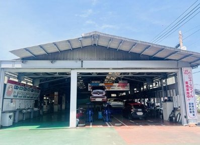
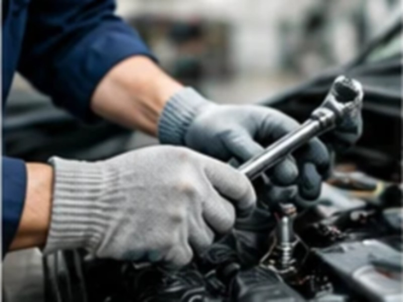
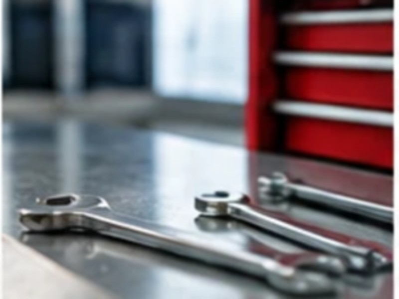
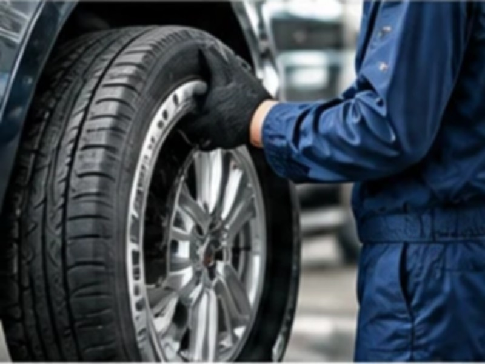

トップ › 採用情報
採用情報
タカヤモーターでは、タカヤの理念に共感し一緒に働ける仲間を募集しています。通期を通じて新人・中途採用活動をしています。ご興味がありましたら、お気軽にお問い合わせフォームにてご連絡ください。
自動車整備士募集！
技術に自信がなくても、やる気と意欲がある方をタカヤモーターは歓迎します。年齢・経験・学歴は一切不問です。
- ベテランスタッフから、タカヤが誇る高い整備技術を学べます
基礎技術の習熟期間を設け、ご本人のご希望やご経験に合わせて少しずつ業務をお任せします。
- 様々な車種を、メーカー問わず整備できます
車検整備・一般整備・車両診断から板金・塗装まで。工程が分かれていないので、幅広く経験できます。
- 岡山で60年、地域密着の老舗ブランド
転勤はありません。地域のお客様と長くお付き合いする仕事です。
- 若手を役員に登用するなど、組織改革を進めています
整備のキャリアだけでなく、事業計画・組織設計・マネジメント・会計まで役員が伝えるキャリアアップ支援制度があります。

まずは職場の雰囲気を見に来てください
面接は計2回。1回目はオンラインでも可能ですが、できれば職場の雰囲気を直接見ていただきたいので対面をおすすめします。現場見学もできます。勤務開始日のご相談（3ヶ月先など）も可能です。
タカヤグループのアピールポイント
多種多様な仲間
ベテランから若手まで、バランスが取れた組織構成となっています。タカヤは多様な価値観を尊重します。
相談できる安心感
スタッフ全員が何気ない会話ができるような雰囲気作りをとても大切にしています。
技術を本気で学ぶ
卓越した技術を身につけるためには自発的、かつ好奇心ある学びが不可欠。タカヤは本人のWillを応援します。
様々なキャリアに挑戦
整備技術を深める以外にも、営業やフロント、経営といった、幅広く学べる機会を設けています。



タカヤグループは社員一人ひとりの成長を本気で応援します
相談
上長以外にも会社役員とも気軽に相談できます。
スキルUP
年間3,500台以上の車を取り扱うため、経験値を多く積めます。
研修
外部研修を積極的に実施し、知見を広めるようにしています。
キャリア
整備以外にも、本人の意欲次第で他部のスキルを学べます。
その他
誕生日休暇など、福利厚生も充実を図っています。
会社だけではなく個人の市場価値を高めることを、タカヤグループは“最重要”ミッションとしています。
募集要項
| 雇用形態 | 正社員 |
|---|---|
| 仕事内容 | 車検整備／一般整備／車両診断／板金・塗装 基礎技術の習熟期間を設けて、高い技術を習得いただくことを会社として期待しています。 |
| 必須 | 3級以上の自動車整備士資格 |
| あれば歓迎 | 自動車整備の実務経験／検査員の有資格者 |
| 給与 | 月給 200,000円〜300,000円 勤続1年以上の方には退職金制度があります。平均所定労働時間 202時間／月 |
| 試用期間 | 3か月（労働条件は同条件） |
| 勤務時間 | 8:30〜17:30（シフト制） |
| 休日・休暇 | 毎週火曜日／日曜日（隔週・祝日はシフト交代制）／年末年始・GW・お盆 特別休暇：誕生日月に誕生日休暇を1日付与 |
| 勤務地 | 〒703-8233 岡山県岡山市中区高屋21-1 JR高島駅から徒歩15分／転勤なし／喫煙所あり |
|---|---|
| 社会保険 | 雇用保険／労災保険／健康保険／厚生年金 |
| 待遇・福利厚生 |
|
| 選考 | 面接2回（1回目はオンライン可・対面推奨）／現場見学可／勤務開始日の相談OK |
| 応募方法 | お問い合わせフォーム、または総務 086-272-3065 へ。ミイダス・Indeed からも応募できます。 |
採用までのステップ
- 1ホームページから申込み
お問い合わせフォームからお申し込みください。
- 2初回面談
オンラインもしくは対面で、会社説明を交えた面談をします。
- 3面接
最低1回から2回まで、対面による面接を予定しています。
よくある質問
- 採用面接では何を聞かれますか？
- 学業や将来のキャリア形成を中心とした質問をさせていただきます。
- 整備技術試験はありますか？
- 基本的に技術試験は実施しないですが、場合によっては確認をさせて頂きます。
- タカヤグループの強みはなんですか？
- 整備、営業、フロントのスタッフ全員が、お客様に喜んで頂けるサービスを提供しようと本気で考え、実践しているところです。当たり前ですが徹底しています。